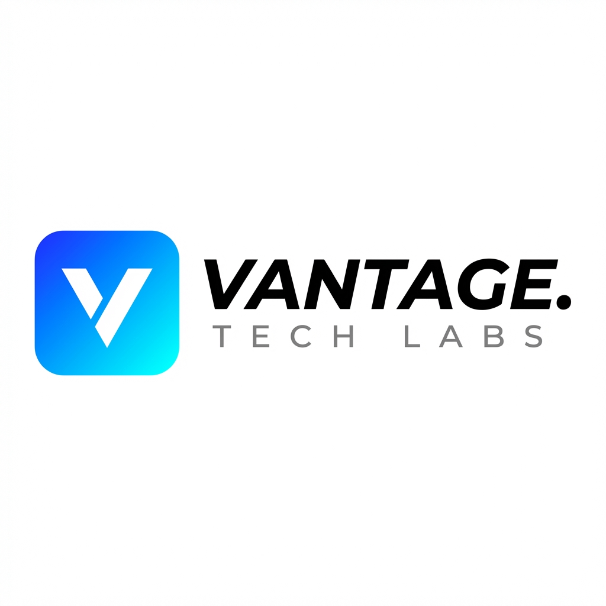

Panaderías industriales
Dosificación asistida, fermentación trazable y control de silos por lote.
▁▃▅▂▆ Rendimiento de masa · 98.6%

Conectamos cada decisión desde el silo hasta el punto de venta: producción, flota, cadena de frío y operación comercial en un solo sistema.
Diseñamos software para las cosas que no se pueden pausar: masa en fermentación, una cámara fría, una ruta en tránsito o una fila en caja.
Dosificación asistida, fermentación trazable y control de silos por lote.
Rastreo satelital, telemetría de remolques y e-POD verificable.
Abrir consola →KDS multizona, comandas móviles y delivery sin fricción.
POS de alto flujo, báscula integrada y stock que conversa con producción.
Axle Drive ↗ es la compañía de transporte de Vantage Tech Labs. La carretera se vuelve una extensión medible de la planta.
Simuladores con datos operativos reales. Cada alerta se puede convertir en una acción antes de que se convierta en un costo.
2× Marraqueta · 1× Café americano
COCINA · MESA 121× Pizza pepperoni · 1× bebida
HORNO · PICKUP3× Capuccino · 2× medialuna
BARRA · MESA 04Hardware industrial diseñado para seguir operando cuando el vapor, la harina, el frío o la conexión no cooperan.
Procesamiento local de operaciones críticas, incluso sin conectividad externa.
RBAC para cada responsable de una operación donde la trazabilidad no es opcional.
Merma operativa
$14.2M CLP / mes ahorradosTicket prep time
Coordinación KDS multizonaExactitud en barriles
Telemetría y trazabilidadUna estimación inicial para dimensionar el impacto operacional de su despliegue.